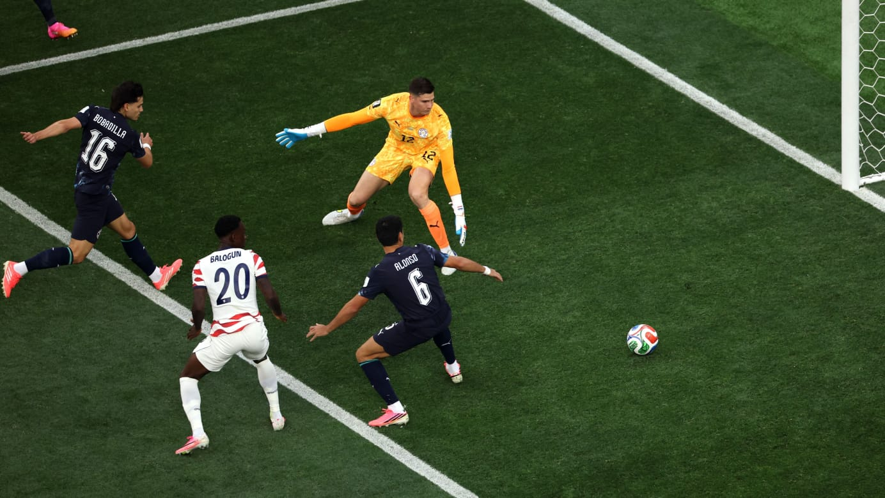

Jogador paraguaio de gigante brasileiro fez primeiro gol contra da Copa do Mundo 2026.

Jogador paraguaio de gigante brasileiro fez primeiro gol contra da Copa do Mundo 2026.
O volante Damián Bobadilla, um dos principais jogadores do elenco atual do São Paulo, cometeu um grande erro em sua estreia na copa do mundo, e vira alvo de zoeira entre rivais.
Na partida entre Estados Unidos e Paraguai, o volante Bobadilla fez o primeiro gol contra da Copa logo aos 7 minutos de jogo, e brasileiros vão a loucura com o erro do jogador que atua nos principais campeonatos do país.
O gol contra do volante foi o primeiro da partida que acabou 4 a 1 para um dos países sediados pela Copa, e o gol do Paraguai foi tbm de um jogador de time brasileiro, Maurício do Palmeiras.
"Uma pena que o primeiro gol tenha sido contra... Estavamos bem no jogo... Os Estados Unidos venceram a partida com absoluta clareza e justiça. Sabíamos que era um adversário complexo... Nos superaram tática, técnica e fisicamente" disse Gustavo Alfaro, técnico da seleção sul-americana.
O gol de Bobadilla não foi o primeiro contra da seleção Paraguaia na história do mundial. Em 2006, o zagueiro Carlos Gamarra cometeu o mesmo erro aos 4 minutos de jogo contra a Inglaterra, garantindo a vitória dos ingleses por 1 a 0.
"Tinha que ser jogador do São Paulo."
"Que fase do São Paulo, refletindo até na Copa do Mundo."
Foram alguns dos comentários feitos por rivais nas redes sociais sobre o gol do jogador são paulino, virando alvo de zoeiras entre os brasileiros.